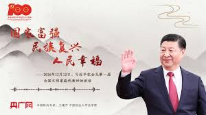
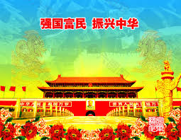
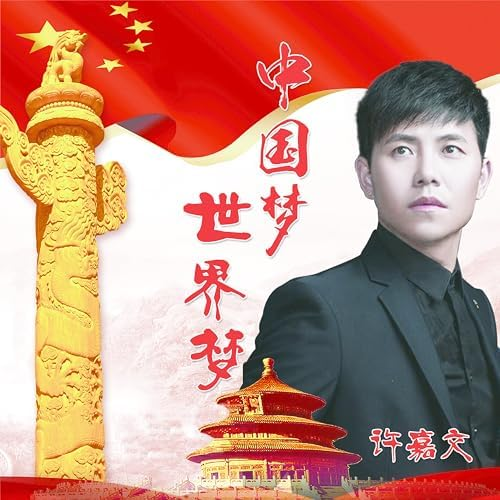

每个人都有自己的梦想，每个民族也都有自己的梦想。习近平总书记指出，实现中华民族伟大复兴，就是中华民族近代以来最伟大的梦想。这个梦想，凝聚了几代中国人的夙愿，体现了中华民族和中国人民的整体利益，是每一个中华儿女的共同期盼。
中华民族有着悠久灿烂的文明，长期居于世界文明发展的先进行列。据有关学者测算，直到18世纪末期，中国的经济规模仍是世界上最大的，相当于上个世纪末期美国经济总量在世界经济总量中的比重。但近代以来，在西方坚船利炮的侵略下，中华民族遭受了深重苦难、付出了重大牺牲，辉煌不再，尊严难立，中华儿女也从此开始了百年“中国梦”的辛苦求索、艰难追寻。
对近现代中华儿女来说，实现中华民族伟大复兴绝不仅是一句豪言壮语，而是有着十分深刻的内涵，这就是让国家更强盛、人民更幸福，中华民族对世界作出更大贡献。
实现中华民族伟大复兴，不是简单地重寻昔日的荣光，而是要让曾经饱受列强欺侮、目前尚是发展中国家的中国经济发展、政治昌明、文化繁荣、社会和谐，到本世纪中叶成为富强民主文明和谐的社会主义现代化国家。
没有人民富裕，发展就不算成功；没有人民幸福，复兴就不算完成。实现中华民族伟大复兴，就是要让中国人民有更好的教育、更稳定的工作、更满意的收入、更可靠的社会保障、更高水平的医疗卫生服务、更舒适的居住条件、更优美的环境，让我们的孩子们成长得更好、工作得更好、生活得更好。进一步说，就是要让中国人民过上更加富裕、更有尊严的生活，实现每个人自由而全面的发展。
处于伟大复兴进程中的中国，在追求本国利益时兼顾他国合理关切，在谋求本国发展中促进各国共同发展；处于伟大复兴进程中的中国，坚持把本国人民利益同各国人民共同利益结合起来，以更加积极的姿态参与国际事务，共同应对全球性挑战，共同破解人类发展难题。
